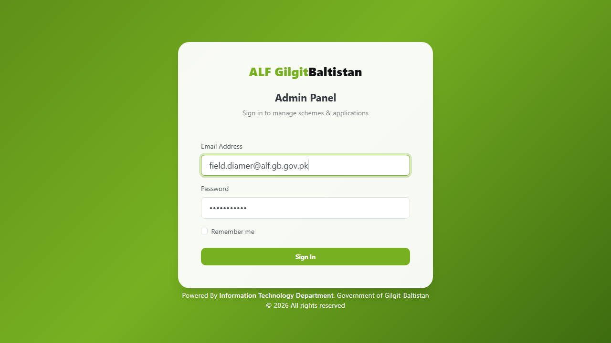

FIELD OFFICER TUTORIAL
ALF-GB Portal — Field Officer Screen-by-Screen Video Walkthrough
On-Site Land Verification, 3+ GPS Perimeter Capture & 3-Photo Evidence Submission
📖 Open Written Manual
⬇ Download Video (.AVI with Voiceover)
STEP 1 OF 7
Step 1: Field Officer Portal Login
مرحلہ 1: فیلڈ آفیسر پورٹل لاگ ان

FOCUS AREA · STEP 1
▶
Click to Start Narrated Field Officer Video Tutorial
00:00 / 00:00
⏮ Prev Step
▶ Play Tutorial
Next Step ⏭
Subtitles:
English + Urdu (اردو)
English Only
Urdu Only (صرف اردو)
Hide Subtitles
Speed:
1.0x Normal
1.2x Fast
1.5x Rapid
⛶ Fullscreen